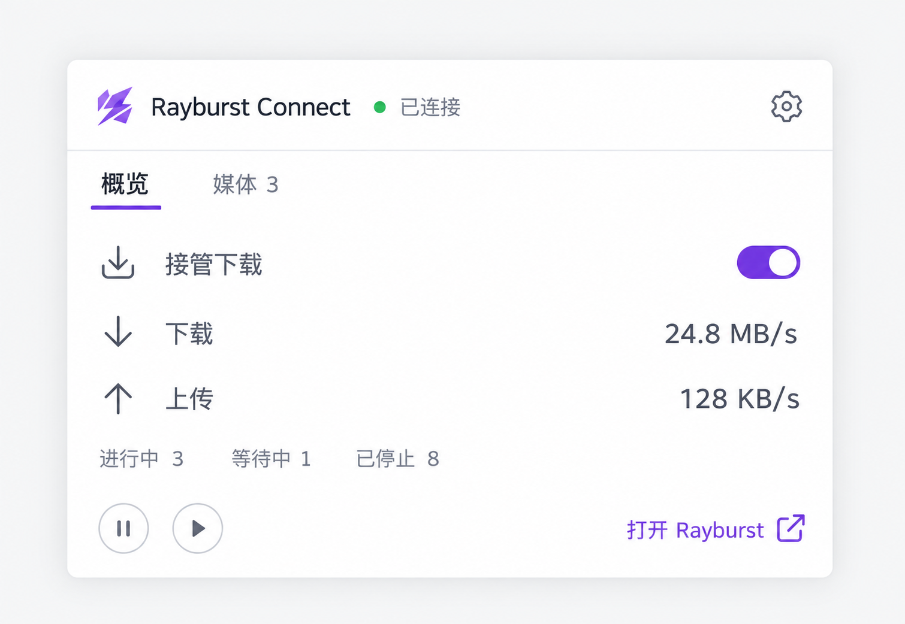
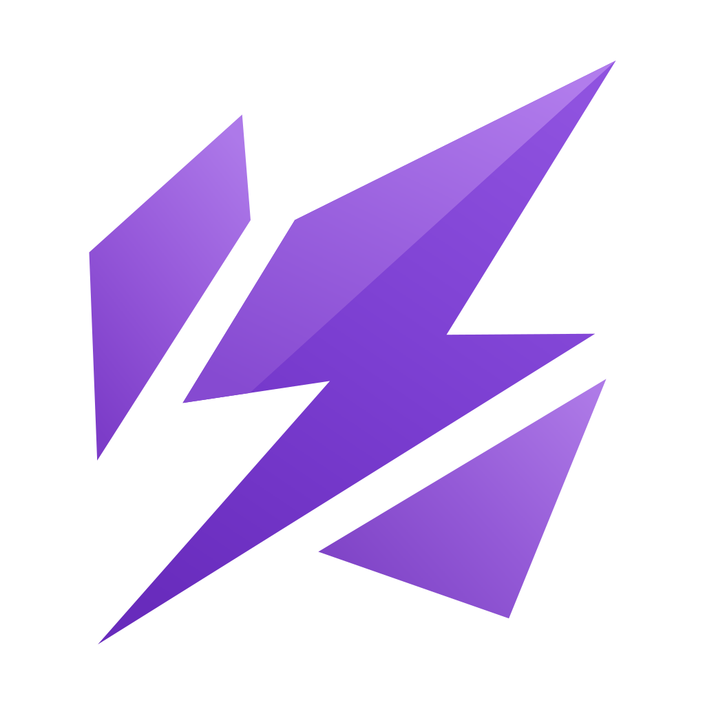
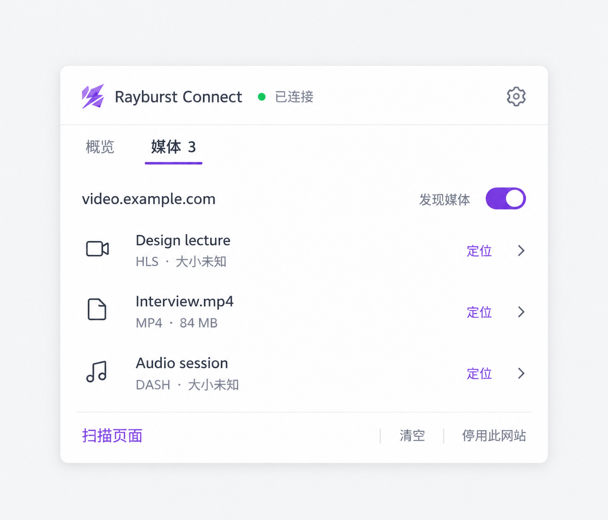
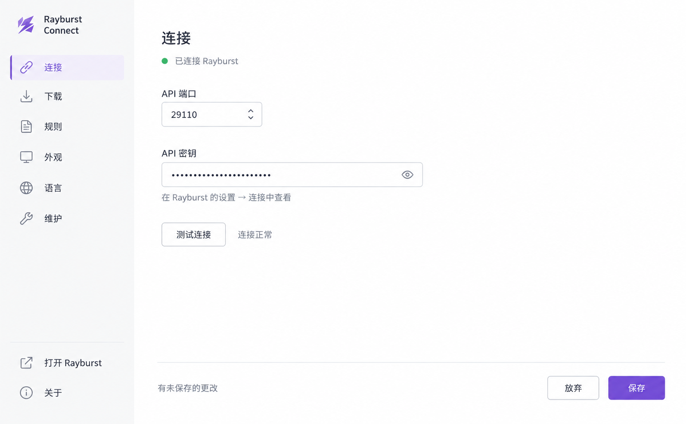
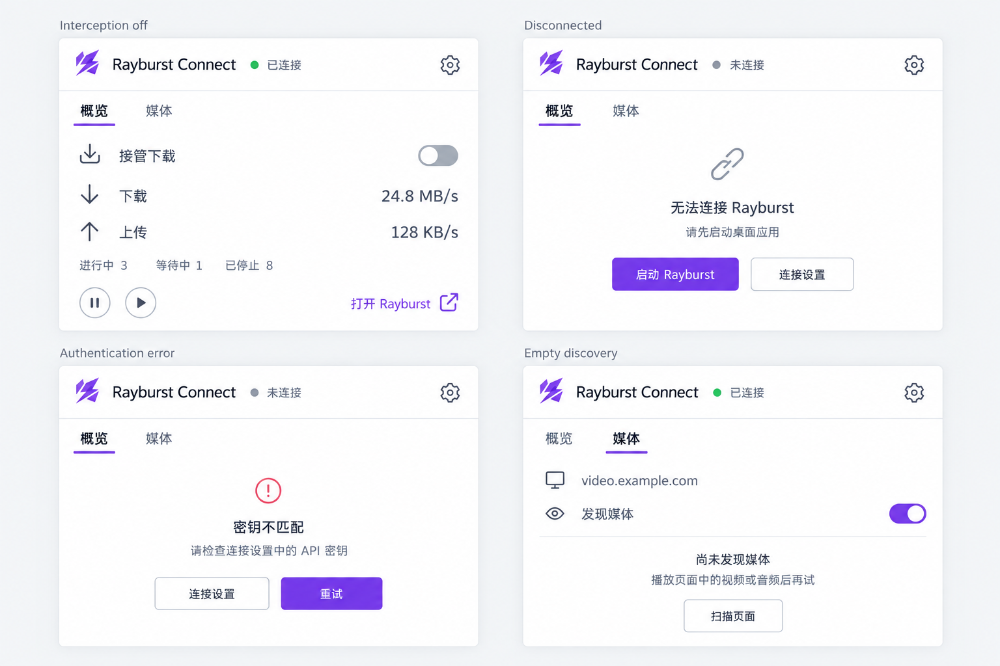
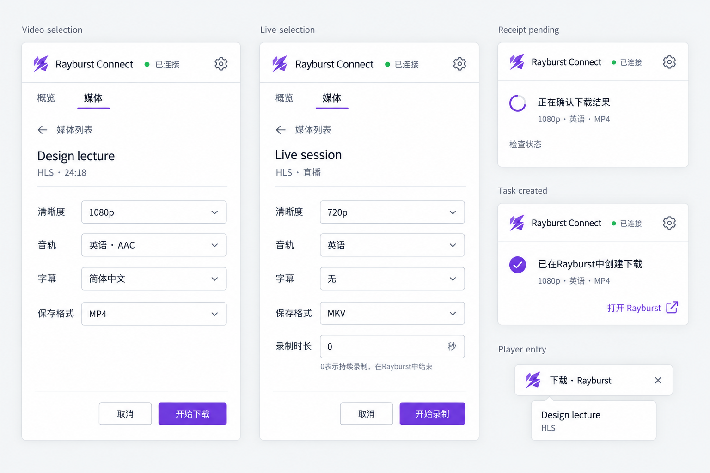
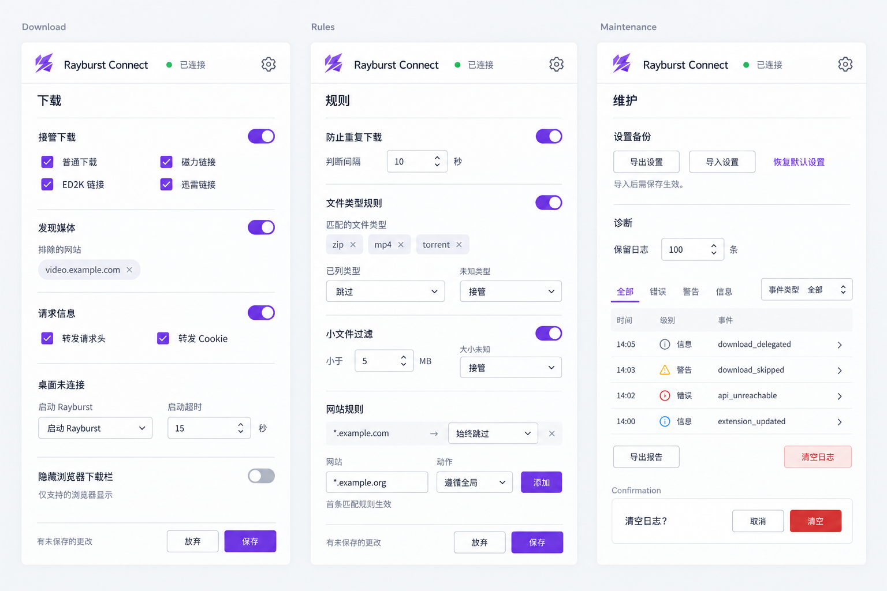
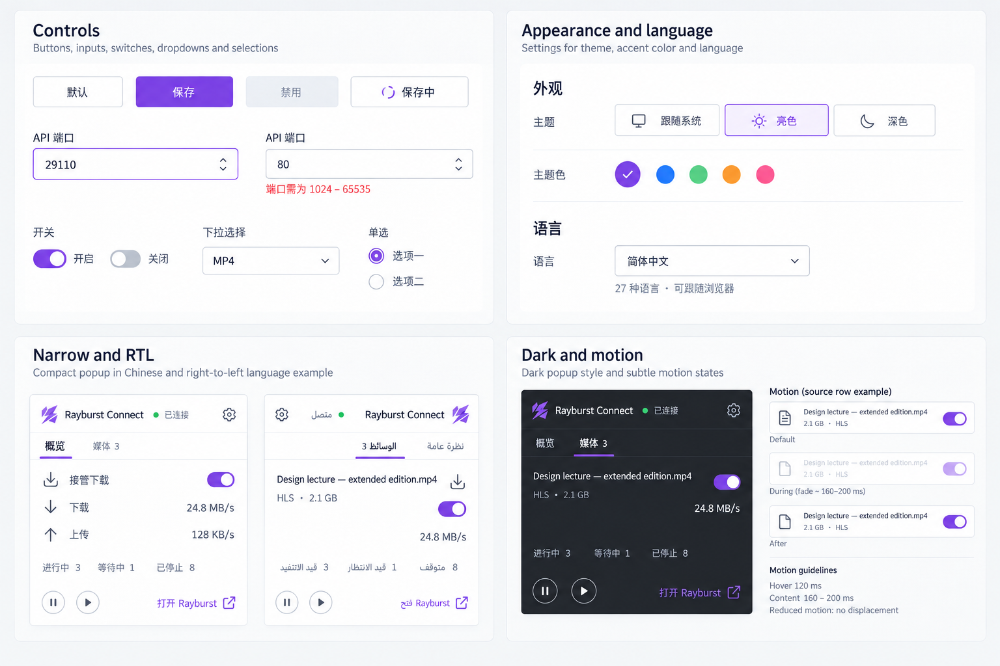

01 / Popup overview
Accepted directionConnected overview, interception, transfer totals and desktop actions.


Rayburst ConnectThree accepted direction images and four composite boards. A quiet, lightweight extension interface using the Rayburst brand.
Read the written corrections before implementation. These are enlarged static references; use logical CSS measurements and actual product contracts.
Connected overview, interception, transfer totals and desktop actions.

A lightweight source list with discovery, location and site controls.

The settings shell, connection fields, test feedback and save footer.

Interception off, disconnected, authentication failure and empty discovery.

Video, live recording, receipt reconciliation, creation feedback and player entry.

Related settings crops. Use the written corrections for invented controls.

Control states, appearance, language, narrow layouts, RTL, dark surfaces and motion intent.

{kind=link}
{kind=link}
{kind=link}
{kind=link}
{kind=link}
{kind=link}
{kind=link}